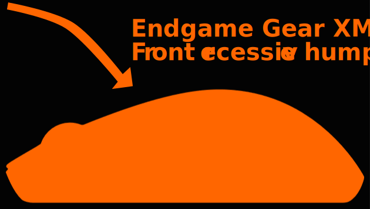

Gaming Mice
A guide on how to find the mouse that fits you in 2024
Peripherals have evolved a lot in the last decade but finding the right gaming mouse has only gotten harder.
3 reasons why
- Information: Companies sell products by keeping information away from you, they want you to focus on the wrong things and the best way to do this is by using gimmicks like DPI, RGB, polling rates.
- Brand Dominance: For a while big name brands dominated the market, now the competition is fierce, and the stigma of smaller companies being unreliable has been broken.
- Misconception: Copying the pro's, a lot of people seem to think this is a shortcut and end up buying a mouse they find uncomfortable. Pros have sponsor obligations and an average of 15,000 hours training.
Now let's clear that misconception up, by taking a look over at Prosettings.net
Where we can see that a shocking 33% of pro players use the G Pro X Superlight.
While the G Pro is a top contender, it can't be optimal for every professional player using it.
Claw grip is the most common, and the G pro lacks ergonomics for this style due to neutral design.
To make the G Pro accesible to every grip it was designed with a center-raised hump that lifts your fingers and shifts your palm lower, a great feature for palm-grip but one that reduces claw stability.
As you can see on the XM1R a mouse that was designed for claw grip, it features a rear-focused hump, that drops down flatter at the front allowing you to arch your fingers and contact your palm with ease.
For a comparison between the two head over to Eloshapes.com
Now that isn't to say that if you are a claw grip user the G pro won't feel good for you, it still might.
But that is what this is all about, finding what is comfortable for you, better aim stems from comfort, every second you spend adjusting your grip and focusing on how you are holding the mouse is a second where you aren't locked in microadjusting to heads or tracking targets.
Comfort
The 3 most important things to focus on
- Grip Style: Consider how you hold your mouse—whether your style is claw, palm, fingertip, or a unique hybrid style, you should aim for a mouse that supports your natural points of contact, it should feel like an extension of your hand.
- Mouse Size: Consider the width and length of your hand—measuring length from the underneath of your palm to the tip of your longest finger, and measuring width from one side to the other excluding your thumb, a mouse that sizes well against your hand will impact comfort and control.
- Mouse Weight: Consider your preference—there is a lot of misinformation around this topic, and a trend of lighter = better, the ideal weight depends on your own comfort, and it is only recommended that you focus on lower weight if you are a fingertip gripper due to the lack of palm contact.
Different Types
Experiment with how you hold your mouse
Grip style
The 3 main styles are Palm, Claw, Fingertip, while a hybrid between these styles is the most common.
Mouse size / hand size
To measure your hand follow the illustration, and find out if your hands are small / medium / large.
Find any mouse you have currently, and google it's weight, the importance here is how you feel individually, not going as light as possible as is a trend currently. Some people will play better with higher weights due to the stability and control it offers, not everything is about reducing friction and throwing a mouse around, follow illustration for examples of mice that fit each style / size at differing weights as an example.